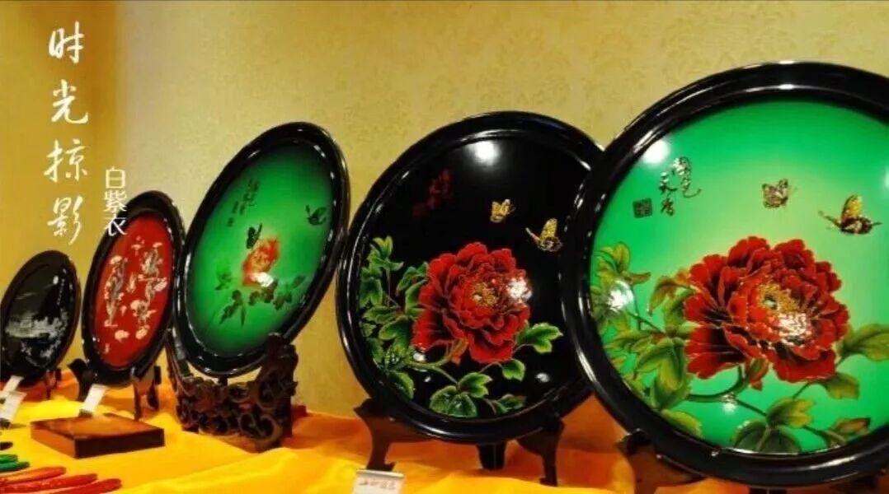
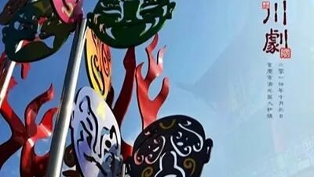
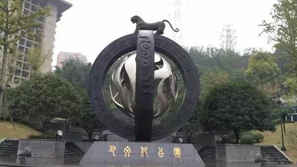
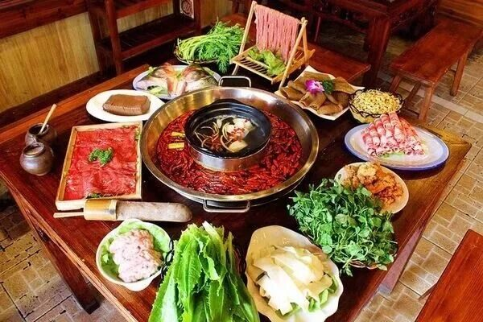
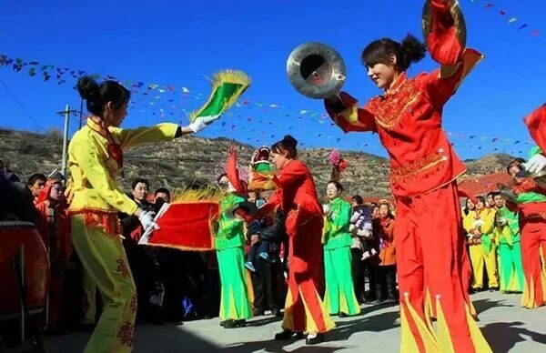
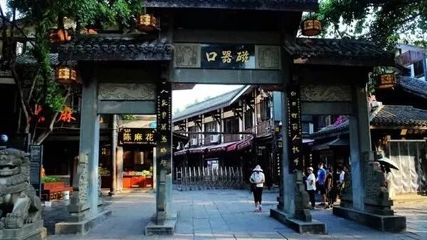
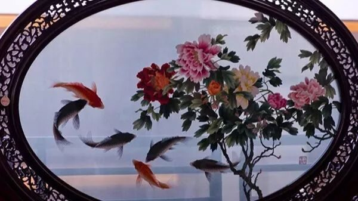

【行者无疆·源洄渝州】文化科普汇总-巴渝文化（二）

行者无疆 文化科普汇总
锵锵锵！！！
行者无疆实践团正式推出
第二期巴渝文化的科普汇总！
相信在看完上一期的文化科普后，
你一定对巴渝文化有了初步的了解了吧！
NOW！！！
精彩继续，带你进一步感受文化底蕴！

古庙依青嶂，
行宫枕碧流。
水声山色锁妆楼，
往事思悠悠。
云雨朝还暮，
烟花春复秋。
重庆，一座山水相依的城市。千里嘉陵江逶迤而来，高山峡谷绵延不绝。一山洗肺，一江涤尘，山水之间，时光肆意激荡，文脉悠然回响。

重庆市川剧院始建于1951年，是著名的国家戏曲剧院。编研名剧包括大幕戏：《李亚仙》《灰阑记》等；精品折子戏：《刺目劝学》《三岔口》等。
现阶段的川剧艺术力求现代化表达，在音乐设计上，借鉴歌剧元素；舞美设计上，用虚实相结合的形式和版画风格呈现，凸显了戏曲特色的假定性和虚拟性。


巴文化范围大体界定在重庆全境、北起汉水、南至鄂西清江流域、东至宜昌、西达川东的地区，其文化主要代表有巴渝舞、巴人风情等。
其文化精神内核使这块土地诞生了“智勇坚定、排难创新、团结奋斗、不胜不休”的“红军精神”，有如精神基因，化为人格标杆，一直滋养着这方土地，成为巴人忠诚干净担当的心性冶炼和价值追求。
合川桃片是重庆合川区传统名点之一，中国国家地理标志产品。
它是一种片状糕点，用上等糯米、核桃仁、川白糖、蜜玫瑰等原料精制加工而成。其形为薄片，色泽洁白，散如展卷，卷裹不断，入口化渣，软糯滋润，细腻香甜，兼核桃、玫瑰清香，清新爽口。
重庆漆艺是重庆市的传统手工技艺。历史悠久，源远流长，最远可上溯至商周时代。
作为一种民间艺术，重庆漆艺是以天然大漆为主要原料，多以用手工制作，凝聚了古代劳动人民的智慧，具有高超的技艺水平和不朽的艺术价值。
重庆火锅


重庆火锅又称为毛肚火锅或麻辣火锅，是中国传统饮食方式，起源于明末清初的重庆嘉陵江畔、朝天门等码头船工纤夫的粗放餐饮方式，原料主要是牛毛肚、猪黄喉、鸭肠、牛血旺等。
渝都火锅不仅香飘国内大中城市、边陲小镇，而且作为渝菜烹饪文化远渡重洋，在日本和南洋落户。


小河锣鼓是一种由鼓、唢呐、锣等多种乐器组合而成的传统民间音乐样式，是巴渝吹打乐的缩影。
据传，公元1647年，蒋姓、唐姓两姓世居的旺族在两条小河交汇处修建大湾场，邀约当地蒋家、唐家、罗家的三支民间吹打乐班，齐聚一堂轮番朝贺，因而得名小河锣鼓。
巫舞是巫师在祭祀中的舞蹈，杂以卜筮、巫词、咒语以及歌舞等手段制造神秘、灵验等气氛，从而达到沟通人神的目的，被称为“人类与神灵通话的语言”。
在漫长的岁月中，巫舞充满封建迷信色彩，但它在民俗学、社会学、宗教学方面有重要的研究价值，在艺术上也有相当的审美价值。

磁器口古镇原名龙隐镇，始建于宋朝，是中国历史文化名街。位于重庆市沙坪坝区嘉陵江畔，是重要的水陆码头。
它蕴含了丰富的巴渝文化、红岩文化和民间文化等。一条石板路，千年磁器口，是重庆古城的缩影和象征，因此，磁器口古镇又被赞誉为“小重庆”。
川东蜀绣

融苏绣、湘绣、粤绣流派技艺之长，川东蜀绣以其创新进取的特点荣获第五批国家级非物质文化遗产奖项，其中巴渝文化亦得以发扬。
川东蜀绣经历过民国时期的落魄，有过七十年代的辉煌，又在八十年代刺绣厂改制后重归沉寂，起起伏伏，终是在文化传承者康宁等人的带领下重新得到公众认知。

一江抱城，山环水绕，
壮美重庆，诗画渝州。
何不追寻行者的足迹，
去看三峡波涛滚滚的江河,
莽莽葱郁的大山；
去领略巴渝英雄文化，
用指尖回溯历史的轨迹；
去听那数不尽的名人故事，
话不完的历史人文？
来源丨行者无疆实践团
文字丨黄玲
排版丨康艳虎
审核丨邓子孚 段智然
行者无疆实践团
QQ：2758025831

随行者一起认识世界
长按二维码关注